Конкурси · журнал «ДентАрт» 2021 №2
Оцінка якості прямої реставрації на конкурсі лікарів-інтернів «Шлях у світ майстерності»
QUALITY ASSESSMENT OF THE DIRECT RESTORATION WITHIN THE CONTEST FOR INTERN-DENTISTS «PATH TO THE WORLD OF MASTERY»
Якісні функціонально й естетично реставрації найкраще можуть робити лікарі-стоматологи, мислення і вміння яких дозволяють відтворювати еталон та імітувати параметри зубів для їх функціональної експлуатації. Але питання експертизи якості відтворення цих параметрів при реставрації зубів були завжди в центрі уваги лікарів. Оцінка відновлених зубів є дуже суб'єктивним фактором, бо одні й ті ж результати можуть зовсім по-різному сприйматися лікарями і пацієнтами.1
Поліпшення якості стоматологічної допомоги можливе тільки тоді, коли будуть визначені чіткі показники, що дозволяють робити якісну оцінку результатів лікування. А оновлюються і формулюються вони саме під час проведення професійних конкурсів лікарів та інтернів, які дозволяють випробувати різні підходи до експертизи якості за короткий час і навчити їх усіх учасників журі. При оцінюванні спостерігається перехід від вимірювання компетенції лікарів до вимірювання результатів реставрації, а відкритість при висвітленні конкурсу в соціальних мережах і пресі дає можливість інтеграції цих критеріїв у повсякденну роботу всіх спеціалістов.1
21 лютого 2021 р. на базі кафедри післядипломної освіти лікарів-стоматологів у клініці «Професорська стоматологія» відбувся очний етап ХХІІ Всеукраїнського професійного конкурсу стоматологів «Шлях у світ майстерності». За умовами конкурсу лікарі-інтерни повинні володіти технологією роботи із сучасними реставраційними матеріалами, уміти виконувати реставрації в зоні передніх зубів верхньої щелепи, порожнин класів III, IV за Блеком, лікувати неускладнений карієс. Лікування проводять під анестезією з використанням ізоляції системою рабердам «у чотири руки». Тривалість роботи – до 3-х годин.
Цьогоріч в очному етапі конкурсу брали участь 8 команд лікарів-інтернів, які пройшли відбір з більш ніж 20 учасників заочного етапу, який був організований 7 лютого 2021 р.
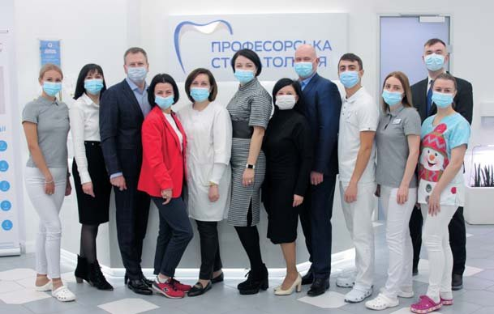
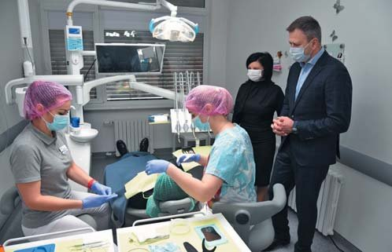
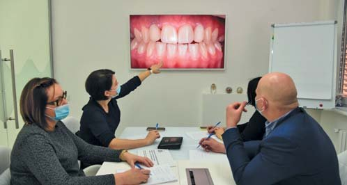
Етапи конкурсної роботи. Оцінювали роботи відразу ж після виконання. Члени журі, організатори, учасники і спонсори перед початком конкурсу.
Оцінювали роботи відразу ж після виконання. Підбиття підсумків конкурсу та нагородження переможців відбулося також 21 лютого 2021 року. Переможцями конкурсу стали:
Олена Шокало (м. Тернопіль) – володарка Гран-прі конкурсу.
Максим Скрипник (м. Полтава), Леонід Косенко (м. Херсон) – перше місце.
Анна Завадська (м. Харків), Іван Шелефонтюк (м. Івано-Франківськ) – друге місце.
Ілона Ставнича (м. Кропивницький), Софія Муравська (м. Кривий Ріг), Єлизавета Бушинська (м. Кривий Ріг) – третє місце.
Учасники конкурсу отримали дипломи та цінні подарунки від спонсорів: сертифікати на придбання стоматологічної продукції від PerioArtAcademy, новинки від Colgate, сертифікати на навчання від Dentsply Sirona, стоматологічний інструментарій від Meddins, книги від Асоціації стоматологів Полтавщини, журнали «ДентАрт» від Навчального центру «Аполлонія», ендодонтичний інструмент ENDOPEN.

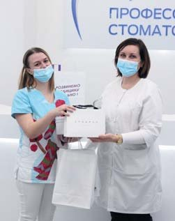
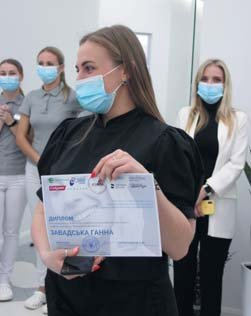
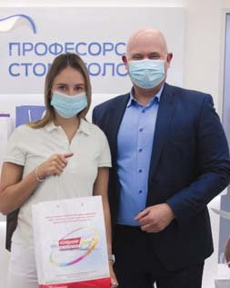
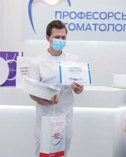
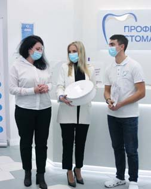
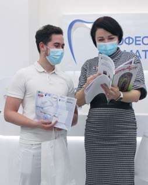
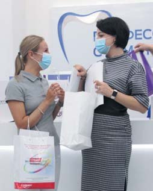
Переможці конкурсу: Олена Шокало (Гран-прі), Максим Скрипник і Леонід Косенко (перше місце), Анна Завадська та Іван Шелефонтюк (друге місце), Софія Муравська, Єлизавета Бушинська (третє місце і приз глядацьких симпатій), Ілона Ставнича (третє місце).
На сайті кафедри післядипломної освіти лікарів-стоматологів www.dentaero.com. 21 лютого у прямому ефірі висвітлені етапи конкурсу і відбулося інтернет-голосування за кращу роботу, в якому приз глядацьких симпатій отримала Єлизавета Бушинська (м. Кривий Ріг).
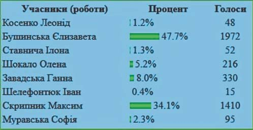
Успіх відновлення твердих тканин зубів безпосередньо залежить від того, наскільки пломба чи реставрація повторюють властивості природних тканин і наскільки вони міцно й непомітно з'єднуються із зубними структурами. Найвища нагорода за всі зусилля лікаря-стоматолога – коли природний зовнішній вигляд відновленого зуба не відрізняється від натурального інтактного зуба і відбувається повне відновлення його функції та інтеграції в навколишні тканини.
Шлях до успішної реставрації лежить через спостереження, сприйняття, розуміння і відтворення. У зв'язку з цим навчання фахівців відбувається у певній послідовності. Так, першим етапом було вивчення зубощелепної системи на кафедрі анатомії. Надалі ці знання студентів адаптовані на етапі освоєння клінічних стоматологічних дисциплін. На кафедрі пропедевтики терапевтичної, ортопедичної та хірургічної стоматології поглиблено вивчається цей розділ, а його межі розширилися на клінічних стоматологічних кафедрах. В інтернатурі він розглядається уже як функціональна анатомія зубощелепної системи з урахуванням її відтворення в техніці прямої і непрямої реставрації, різними видами протезування. Головною метою інтернатури і є підвищення рівня практичної підготовки стоматологів, їхньої професійної адаптації до самостійної лікарської діяльності за базовою спеціальністю.1
Кафедра післядипломної освіти лікарів-стоматологів УМСА має бази для навчання лікарів-інтернів реставраційній техніці (клініки «Аполлонія», «Професорська стоматологія», «Махаон» та ін.). Для участі в конкурсі інтерни повинні освоїти клінічні прояви карієсу, склад, властивості адгезивних систем та фотополімерних композитів, техніку роботи з ними, особливості препарування в техніці адгезивної реставрації і фінішну обробку та полірування. Серед загальної кількості інтернів виділяються лікарі, які мають схильність до цього виду діяльності, бажання продемонструвати її іншим. Тобто поряд з умінням виконати роботу вони мають особливі характерологічні риси, які дозволяють їм працювати під пильною увагою колег, демонструвати результат журі та в Інтернеті.
Саме з метою спонукання інтересу до знань і вмінь застосування нових технологій і методик у галузі естетичної реставрації, для демонстрації якості лікувальної роботи на кафедрі післядипломної освіти лікарів-стоматологів і проводиться конкурс серед лікарів-інтернів на кращу роботу з відновлення зруйнованих зубів в адгезивній техніці. Ідея була не нова, бо в медицині влаштовуються змагання, конкурси, наприклад, серед медичних сестер, зубних техніків. Ми використали досвід аналогічного змагання – Призма-чемпіонату, який вступив у силу і отримав велику популярність на всьому пострадянському просторі.3
При організації конкурсу ставилися такі цілі й завдання:
- популяризація та впровадження у практику лікаря-стоматолога сучасних технологій, якісних пломбувальних матеріалів і приладів;
- демонстрація стандарту якості роботи лікаря-стоматолога у реставраційній техніці;
- оновлення, формулювання і визначення чітких критеріїв якості реставрації з урахуванням новітньої інструментальної та матеріальної бази;
- інформування населення про можливості якісного лікування.
Відновлення твердих тканин зубів можна вважати цілком успішним лише в тому разі, якщо його результати відповідають усім сучасним вимогам, а також індивідуальним запитам та очікуванням пацієнта. Це означає, що характеристики відновлених твердих тканин зубів повинні забезпечувати одночасно анатомічну, функціональну, естетичну та повну психологічну реабілітацію пацієнта.
Для оцінки якості робіт використовували критерії якості, що їх розробив Сергій Радлінський для Призма-чемпіонату.2
| Параметри | Способи оцінки |
|---|---|
| Загальний вигляд і пропорції | Візуальний, вимірювання в різних напрямках штангенциркулем |
| Підбір відтінків і моделювання переходів кольору | Візуальне порівняння з натуральними зубами при яскравому освітленні і темним фоном |
| Прозорість ріжучого краю і проксимальних поверхонь | Візуальне порівняння у прохідному і відбитому світлі різного спрямування |
| Тіло зуба | Візуальне порівняння з освітленням і без освітлення |
| Шийка зуба | Візуальне порівняння у променях полімеризаційної лампи |
| Крайове прилягання | Зондування ясенного жолобка, перевірка флосами, рентгенівський знімок |
| Рельєф і блиск поверхні | Візуальне порівняння з натуральними зубами у висушеному вигляді |
| Контактні пункти (цілісність, форма) | Перевірка лавсановою смужкою, візуальне визначення рівня контактної точки та конфігурації проксимальної поверхні |
| Оклюзійні контакти | Перевірка артикуляційною фольгою і папером |
| Артистичність виконання | Візуальне порівняння у прохідному і відбитому світлі різних напрямків |
| Дотримання здоров'я пацієнта | Анамнез, оцінка технологічних етапів реставраційного процесу, тривалість роботи |
На кожному етапі конкурсу відбувається фотореєстрація, яка допомагає журі конкурсу визначити якісне втілення всіх нюансів реставрації. Конкурсний досвід дозволяє отримати важливі спостереження, проаналізувати помилки і труднощі, з якими стикаються лікарі-інтерни, сформувати чіткий алгоритм реставрації. Стійкий гарантований результат можна отримати завдяки дотриманню протоколів роботи, наполегливому тренуванню та аналітичному розумінню головних критеріїв зовнішнього вигляду природних тканин зуба.
Алгоритм прямої реставрації будь-яких каріозних порожнин складається з важливих етапів, основними з яких є професійне очищення зубів, визначення кольору, знеболювання, препарування, накладення рабердаму, адгезивна підготовка, моделювання, фінішна обробка та полірування реставрації.
Важливим етапом, якому іноді конкурсанти не надають достатньо уваги, є самостійний контроль якості реставрації: візуальне порівняння у прохідному та відбитому світлі різних напрямків, зондування ясенного жолобка, перевірка флосами, контрольний рентгенівський знімок, перевірка лавсановою смужкою, візуальне визначення рівня контактної точки та конфігурації проксимальної поверхні, візуальне порівняння з природними зубами у висушеному вигляді для оцінки якості полірування. За результатами наших спостережень видно, що головними труднощами для лікарів-інтернів є етапи підбору кольору, препарування глибоких порожнин і побудови контактних пунктів.
Таким чином, професійні конкурси реставрації зубів, зокрема Всеукраїнський конкурс «Шлях у світ майстерності», що відбувається понад 20 років на базі кафедри післядипломної освіти лікарів-стоматологів УМСА, дозволяють привернути увагу авдиторії інтернів і фахівців до проблеми якості реставрацій, показати, що стійкий гарантований результат можна отримати завдяки тренуванню та аналізу головних критеріїв зовнішнього вигляду природних тканин зуба. Адже кожна реставрація – це і репутація лікаря, який лише розпочинає свій професійний шлях, його певний професійний статус, і майбутня довіра пацієнтів. Конкурсний досвід дозволяє отримати портфоліо для подальшого успішного працевлаштування.
Крім того, конкурс – це чудова можливість для обміну досвідом і демонстрації найкращих практик та позитивного досвіду виконання процедур з використанням сучасних матеріалів. На кожному етапі конкурсу робиться фотореєстрація, яка допомагає журі конкурсу визначити якість виконання всіх нюансів реставрації. Оцінка відновлених зубів є досить суб'єктивною, оскільки одні й ті ж результати можуть зовсім по-різному сприйматися різними фахівцями. Буде незайвим також дізнатися відчуття і думку пацієнта як майбутнього користувача після завершення відновлення зубів, ця оцінка може бути суб'єктивною за формою, але об'єктивною по суті, поскільки зорове сприйняття реставраційної конструкції є вирішальним в оцінці її якості.
Якщо реставрація зубів не дала бажаного результату, це може бути пов'язано з неефективністю одного з її етапів. У такій ситуації слід ретельно проаналізувати всі етапи відновлення зуба, визначити причину невдачі і під наглядом лікаря-інструктора внести корективи та виправити критичні помилки поза конкурсом.
Роботи учасників конкурсу
Лікар — Олена Шокало (м. Тернопіль)
Володарка Гран-прі конкурсу.
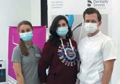
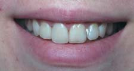
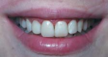
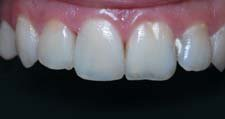
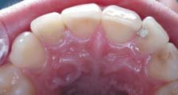
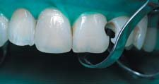
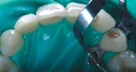
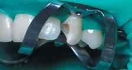
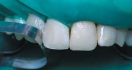
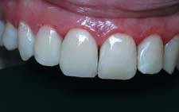
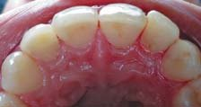
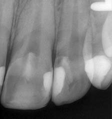
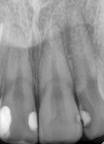
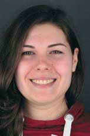
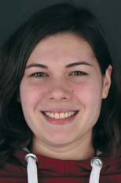
Лікар — Максим Скрипник (м. Полтава)
Перше місце.
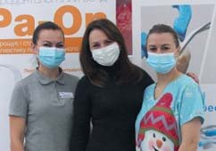
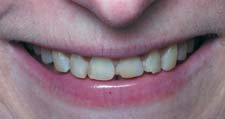
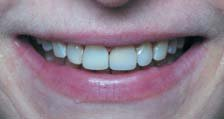
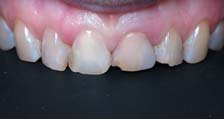
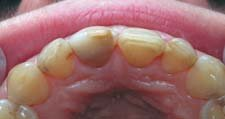
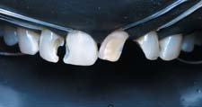
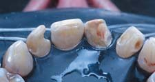
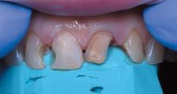
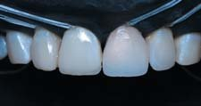
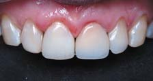
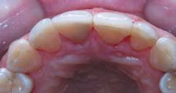
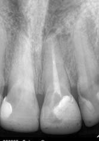
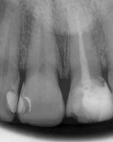
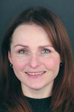
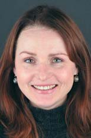
Лікар — Леонід Косенко (м. Херсон)
Перше місце.
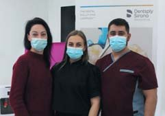
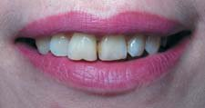
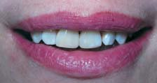
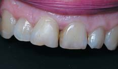
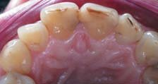
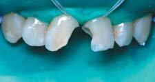
Лікар — Анна Завадська (м. Харків)
Друге місце.
Лікар — Іван Шелефонтюк (м. Івано-Франківськ)
Друге місце.
Лікар — Ілона Ставнича (м. Кропивницький)
Третє місце.
Лікар — Єлизавета Бушинська (м. Кривий Ріг)
Третє місце і приз глядацьких симпатій.
Лікар — Софія Муравська (м. Кривий Ріг)
Третє місце.
Фото Владислава Литвина.
Література
- П. М. Скрипников, Т. П. Скрипникова, Т. А. Хміль, К. А. Лазарєва, О. Е. Бережна. Експертиза якості прямих реставрацій передніх зубів в рамках конкурсу лікарів-інтернів. // Проблеми безперервної медичної освіти та науки. – 2021. – №1.
- Лазарева К. А. Биомиметическая техника реставрации передних зубов с материалом CeramX One SphereTEC. // ДентАрт. – 2018. – №2 – С. 52-58.
- Лазарева К. А. Реставрация контактных поверхностей передних зубов / К. Лазарева // ДентАрт. – 2019. – № 2. – С. 36-46.
- Ломиашвили Л. М. Изучение клинико-морфологических особенностей зубочелюстной системы при проведении реставрационных работ. / Л. М. Ломиашвили // Институт стоматологии. – 2003. – № 2(19). – С. 26-31.
- Ломиашвили Л. М. Художественное моделирование и реставрация зубов. / Л. М. Ломиашвили, Л. Г. Аюпова // М: Медицинская книга, 2004. – 252 с.
- Радлинский C. B. Адгезивная техника искусственных коронок зубов / C. B. Радлинский // ДентАрт. – 1997. – № 3. – С. 23-31.
- Радлинский C. B. Биомиметические направление в реставрации зубов / C. B. Радлинский // Маэстро. – 2002. – №5. – С. 10-17.
- Радлинский C. B. Виды прямой реставрации зубов. / C. B. Радлинский // ДентАрт. – 2004. – №1. – С. 33-40.
- Радлинский C. B. Реставрация контактных поверхностей верхних передних зубов / C. B. Радлинский // ДентАрт. – 2008. – №1. – С. 34-48.
- Радлинский C. B. Реставрация передних зубов / C. B. Радлинский // ДентАрт. – 1998. – №3. – С. 29-41.
- Радлинский C. B. Управление прозрачностью реставрационных конструкций. / C. B. Радлинский // ДентАрт. – 1997. – №4. – С. 30-39.
- Радлинский C. B. Финишная отделка реставраций / C. B. Радлинский // ДентАрт. – 1998. – №4. – С. 72-86.
- Флейшер Г. М. Индексная оценка восстановленных зубов и реставраций. Руководство для врачей – ЛітРес. – 2019.